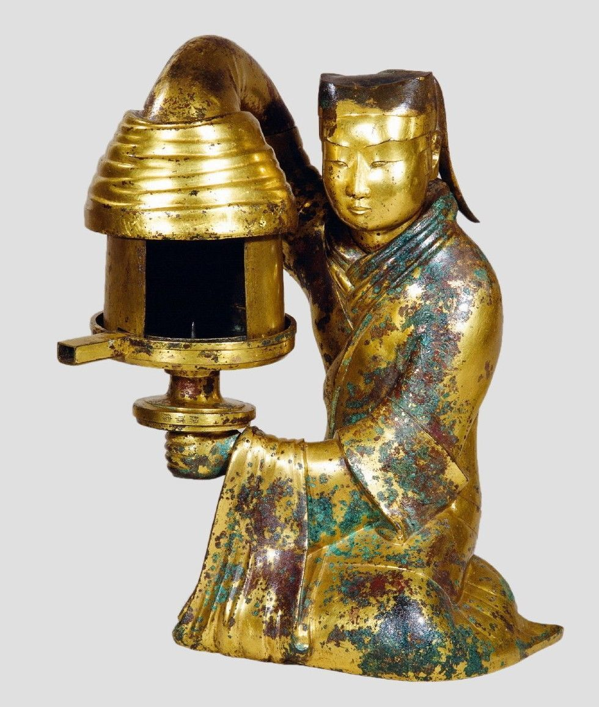
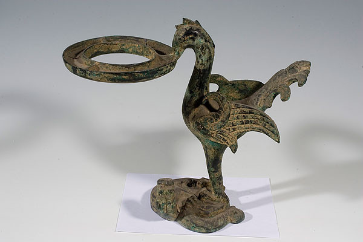
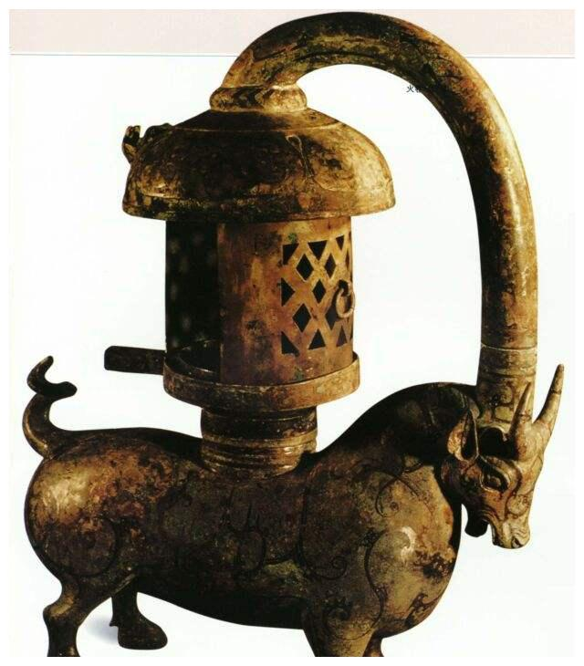
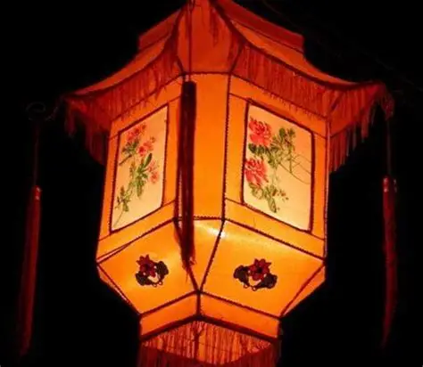
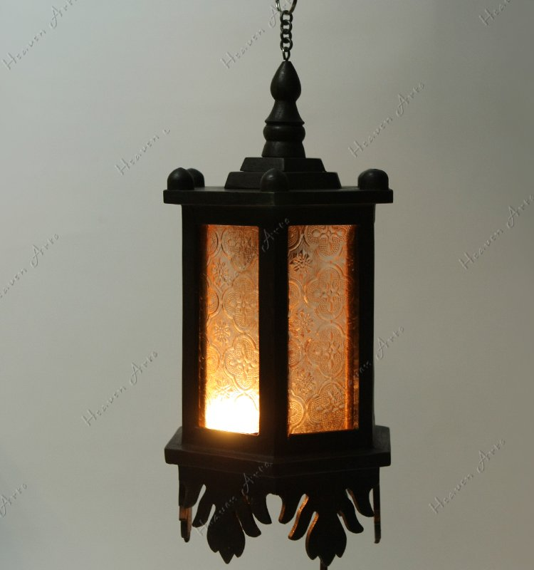
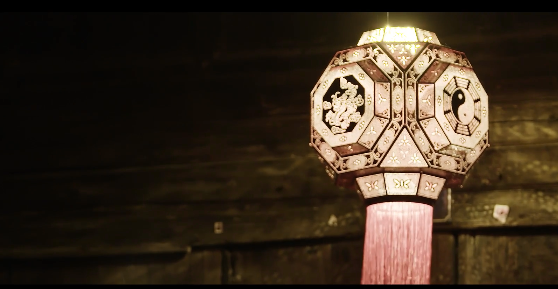
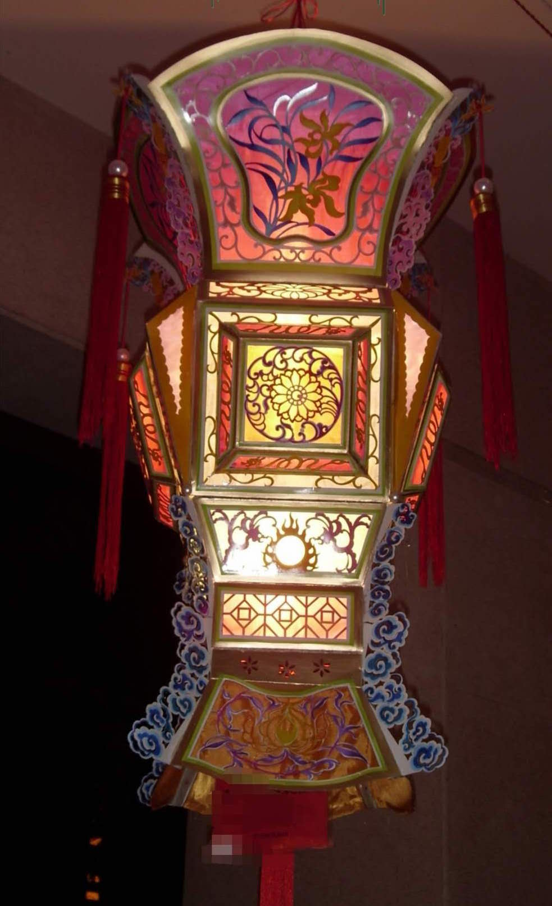
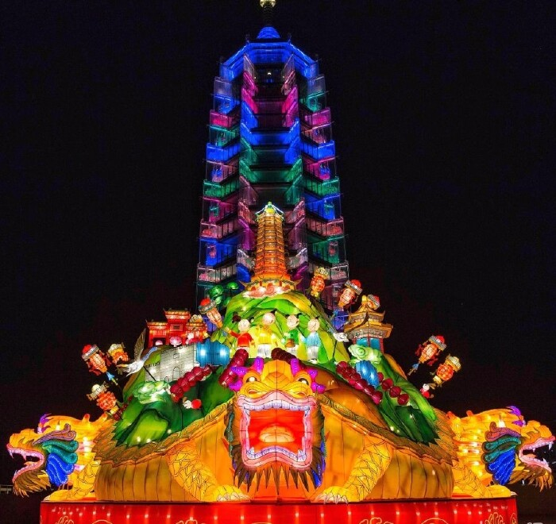
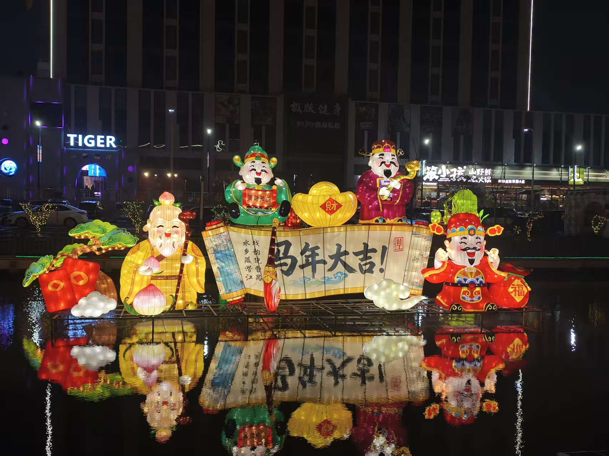
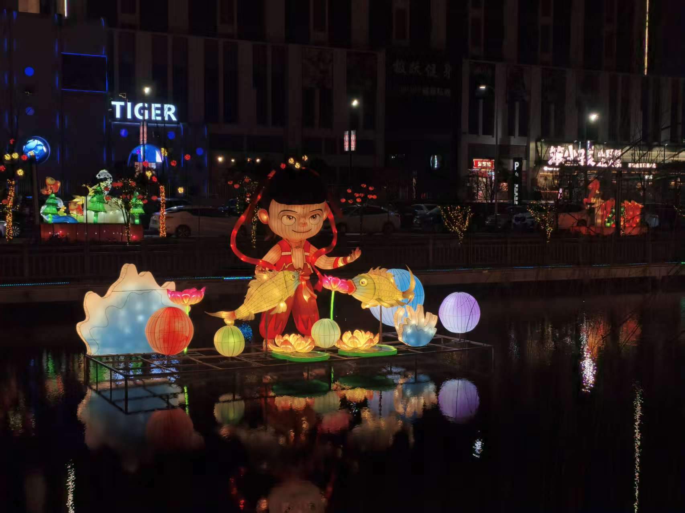

汉代（奠基期）



汉代（奠基期）
汉代是中国灯具发展的重要时期，以青铜灯具为代表，造型端庄、功能完善，兼具照明、环保与审美价值。长信宫灯、铜牛灯、朱雀灯等器物，结构精巧、纹饰典雅，将实用功能与艺术造型完美结合，虽非传统意义上的花灯，却为后世灯艺的发展奠定了造型、结构、工艺的基础，是灯文化从实用走向艺术的开端。
宋元（成熟期）



宋元（成熟期）
宋代民间经济繁荣，花灯工艺进入鼎盛时期。走马灯、无骨灯、琉璃灯、万眼罗灯等纷纷出现，工艺精巧、种类繁多。走马灯利用热力驱动旋转，体现了古人的智慧；无骨灯、罗帛灯以细腻做工见长，光影通透。花灯不再局限于宫廷，深入市井街巷，成为全民参与的节庆艺术，为后世民间花灯发展提供了丰富范式。
明清（繁荣期）


明清（繁荣期）
明清时期，花灯工艺进一步成熟，料丝灯、宫灯、鳌山灯等大型灯组盛行。宫灯典雅华贵，成为厅堂陈设；鳌山灯气势恢宏，集百灯于一体，构成壮观灯景。民间扎灯、舞灯、赏灯习俗趋于完整，灯与民俗、祭祀、表演深度结合，形成体系完整、地域鲜明的灯文化，为各地传统花灯（包括潜江花灯）提供了直接传承的土壤。
现当代



现当代
现代花灯在继承传统工艺的基础上，融入LED 光源、动态机械、地域文化等元素，造型更大、效果更炫、主题更鲜明。从传统龙灯、蚌壳灯到地方特色灯组，再到城市灯会，花灯既保留非遗根脉，又贴合当代审美，成为展示地域文化、传承民俗精神的重要载体，在新时代焕发新的光彩。